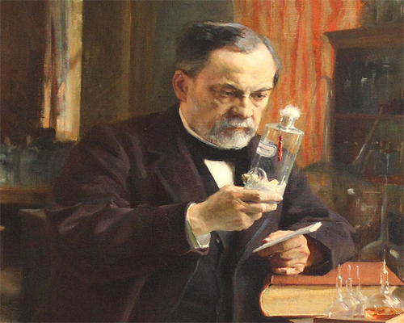

Остале странице:
Публикације Луја Пастера
Пастерови главни објављени радови:

- Studies on Wine
- Studies on Vinegar
- Studies on Silk Worm Disease
- Some Reflections on Science in France
- Studies on Beer
- Microbes organized, their role in fermentation, putrefaction and the Contagion
- Speech by Mr L. Pasteur on receptionn to the Academie francaise
- Treatment of Rabies